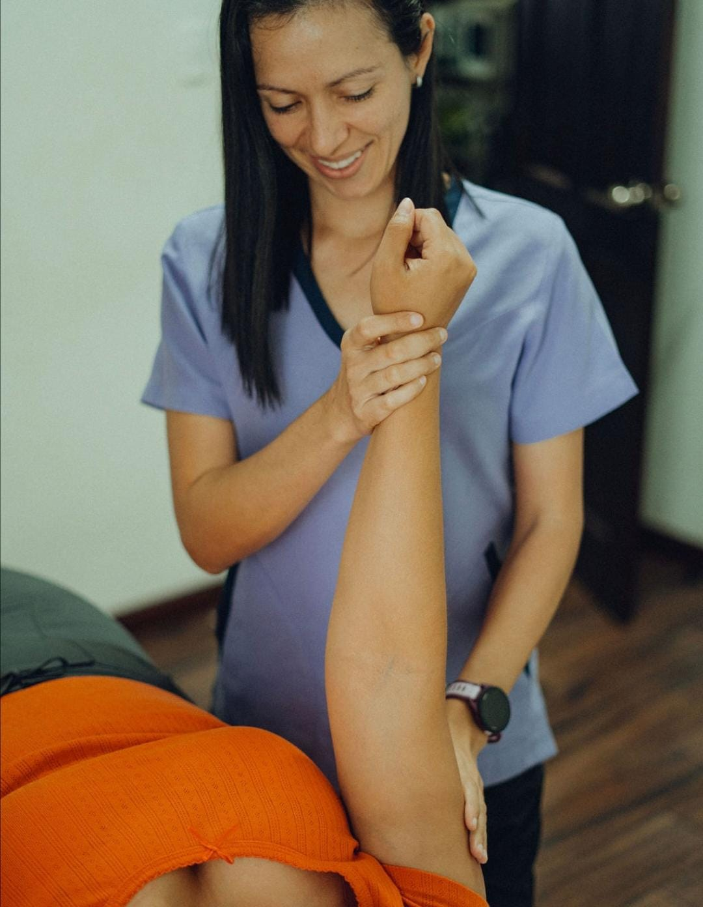
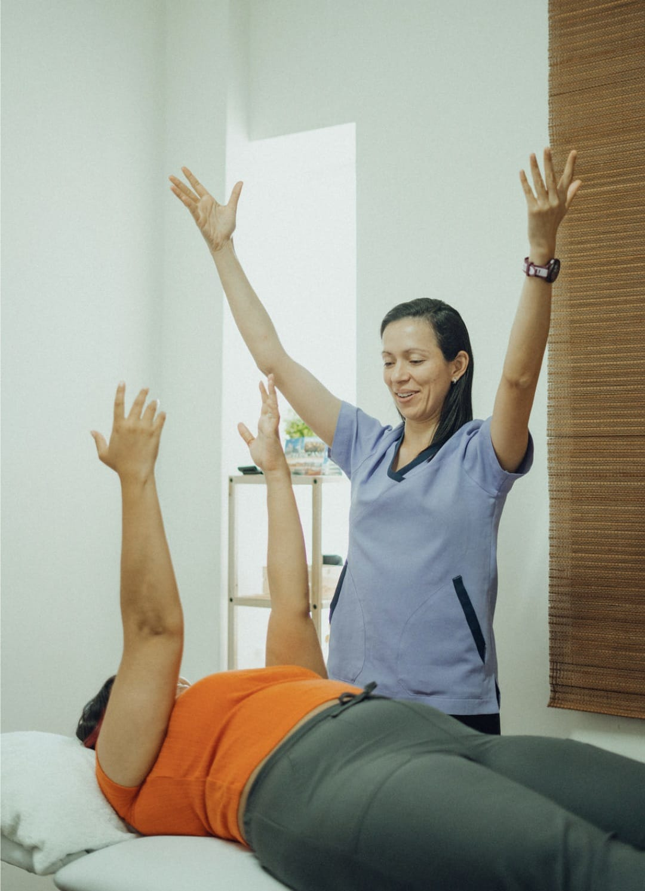
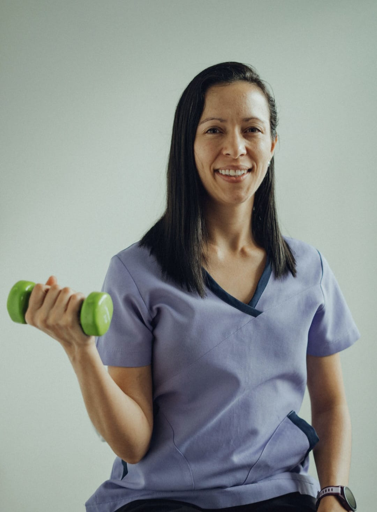
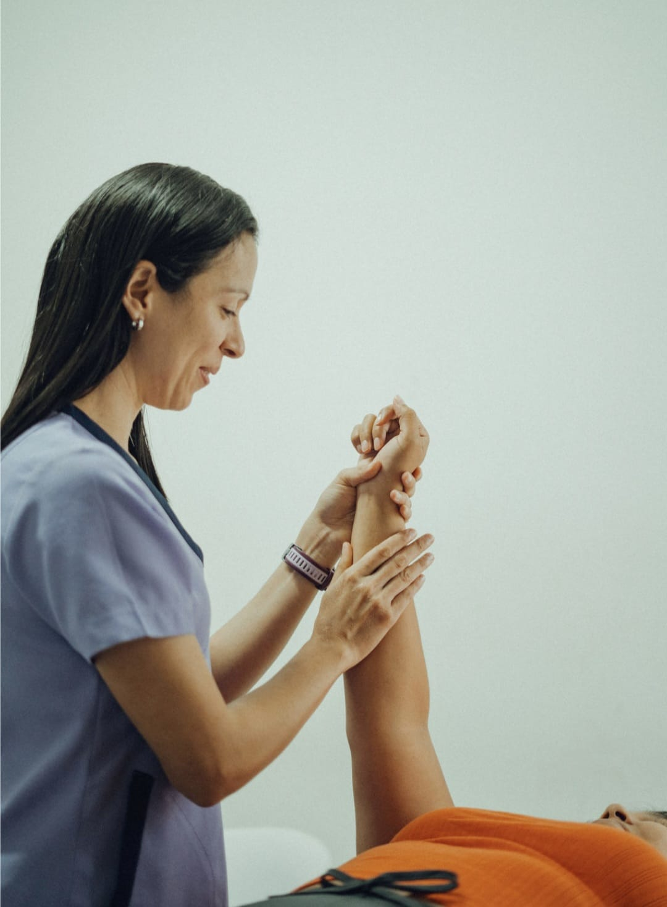
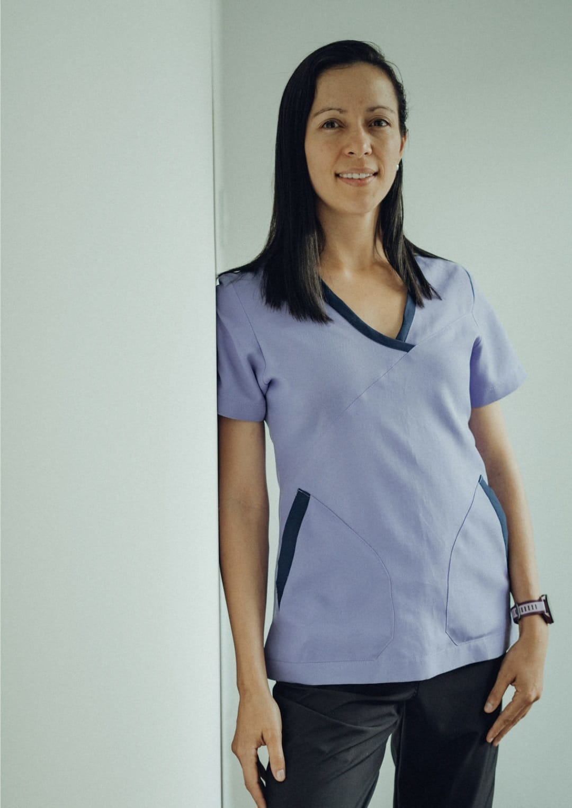
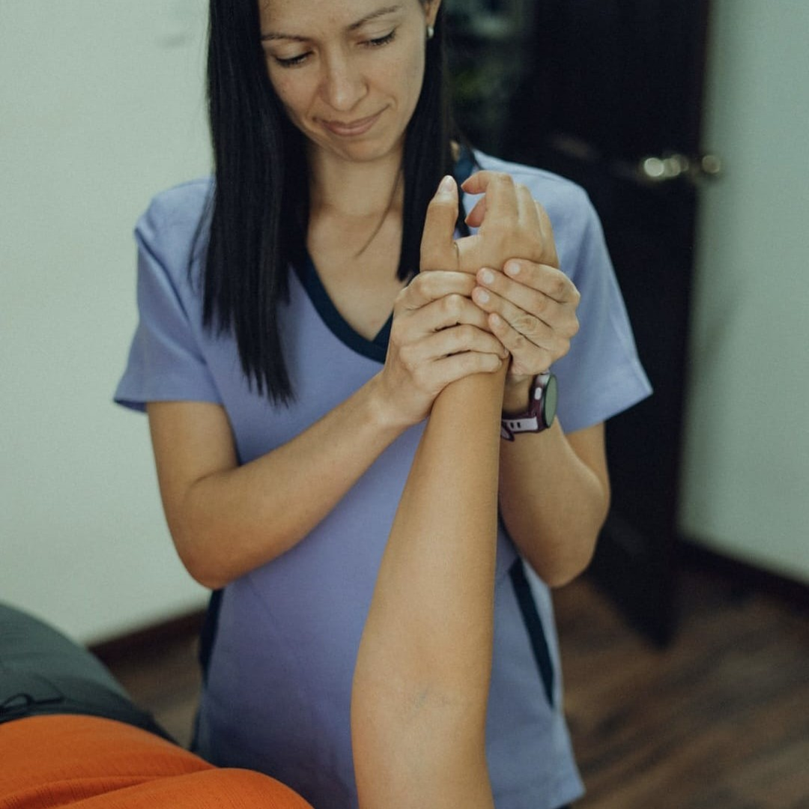

Escuchar antes de tratar
Comprendemos qué siente, qué le preocupa y qué desea recuperar.
Rehabilitación oncológica · deportiva · ortopédica
Acompañamos cada etapa de su recuperación con fisioterapia especializada, cercana y diseñada alrededor de lo que usted necesita volver a hacer.
Nuestra forma de cuidar
La recuperación no es lineal ni igual para todos. Escuchamos su historia, valoramos su movimiento y construimos un plan seguro que respeta sus tiempos.

Comprendemos qué siente, qué le preocupa y qué desea recuperar.
Ejercicio terapéutico ajustado a su energía, etapa y objetivos.
Más confianza, autonomía y bienestar en su vida cotidiana.
Detalles que hacen la diferencia
Recuperamos amplitud, control y confianza para que las actividades cotidianas vuelvan a sentirse posibles.
Acompañamos la prevención y el manejo de la hinchazón con educación, movimiento y cuidado de la piel.
Trabajamos sensibilidad, adherencias y movilidad del tejido para mejorar comodidad y función.
Construimos fuerza de forma progresiva y segura, de acuerdo con su energía y sus objetivos.
Combinamos movimiento, educación y estrategias terapéuticas para disminuir molestias y recuperar seguridad.
Dosificamos actividad y descanso para conservar energía y avanzar sin exigirle de más al cuerpo.
Especialidades
La valoración inicial nos permite entender su punto de partida y recomendar el acompañamiento más adecuado.

EspecialidadAntes, durante y después
Acompañamiento físico para recuperar movilidad, manejar molestias y volver a conectar con su cuerpo en cada etapa del tratamiento.

Recuperar · prevenir · rendir
Recuperación funcional y prevención de lesiones para regresar al deporte con fuerza, movilidad y técnica.
Consultar esta especialidad →
Función · alivio · autonomía
Evaluación y tratamiento de articulaciones, músculos y tejidos blandos para moverse con mayor seguridad.
Consultar esta especialidad →Lo que buscamos juntos
Menos miedo al movimiento. Más claridad sobre su proceso. Más herramientas para seguir avanzando dentro y fuera de consulta.
El progreso se siente en
Libertad para retomar lo cotidiano con menos temor.
Seguridad para volver a creer en lo que su cuerpo puede hacer.
Herramientas para avanzar a su ritmo en cada nueva etapa.
Su ritmoSus metasSu proceso


Conozca a María
Soy María Monge, fisioterapeuta y fundadora de Renacer Vita.
Creo en una rehabilitación donde cada explicación da tranquilidad, cada ejercicio tiene un propósito y cada avance se reconoce. Mi trabajo es ayudarle a entender su cuerpo y acompañarle a recuperar movimiento con seguridad.
“No se trata solo de volver a moverse, sino de volver a confiar en lo que su cuerpo puede hacer.”
Estamos para orientarle
Cuéntenos brevemente su situación. Puede escribir usted o un familiar y con gusto le ayudaremos a elegir el siguiente paso.
Dónde atendemos
Antes de comenzar
No necesita tener todas las respuestas antes de escribirnos. Podemos orientarle con calma y claridad.
Abra cada pregunta para conocer lo esencial antes de su primera valoración.
Sí, cuando está indicada y coordinada con su equipo médico. Adaptamos el plan a su tratamiento, energía y síntomas.
Su seguridad y su ritmo orientan cada sesión.No tiene que decidirlo antes de escribir. Cuéntenos su situación y le orientaremos sobre la valoración más adecuada.
Le ayudamos a elegir el punto de partida.No. Cada plan parte de una valoración individual y cambia según sus objetivos, síntomas y evolución.
Su proceso no se compara: se acompaña.Claro. Un familiar puede escribirnos, contarnos el caso y consultar cómo iniciar el proceso.
Orientamos con la misma cercanía desde el inicio.Experiencias que acompañan
Comparta cómo vivió su atención en Renacer Vita. Puede firmar su mensaje o enviarlo de forma anónima.
Voces que dejan huella
Vista de demostraciónLos nombres y testimonios mostrados a continuación son ficticios y sirven para visualizar el diseño final.
“Me sentí escuchada desde la primera sesión. Cada ejercicio tuvo una explicación clara y avancé sin sentir que tenía que apresurar mi proceso.”
“Volví a moverme con más confianza y, sobre todo, entendí cómo cuidar mi cuerpo fuera de consulta.”
“El plan se adaptó a mis metas y a mi ritmo. Sentí acompañamiento, seguridad y progreso real.”
Puede hacerlo con su nombre o de forma anónima. Solo le tomará un momento.